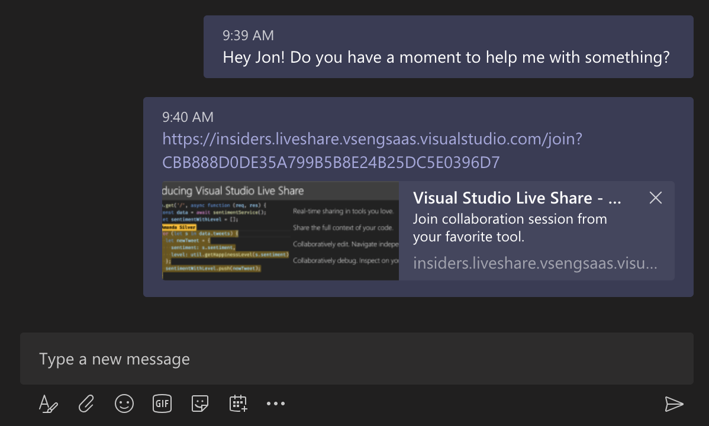
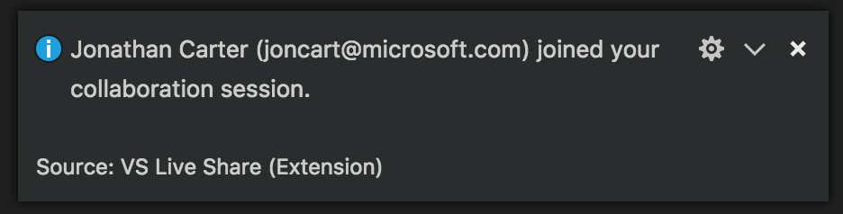
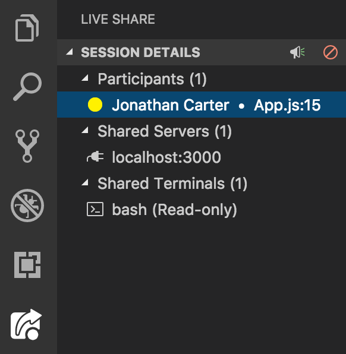

Live Share
Real-time collaborative development from the comfort of your favorite tools.
Microsoft Visual Studio Live Share
Visual Studio Live Share enables you to collaboratively edit and debug with others in real time, regardless what programming languages you're using or app types you're building. It allows you to instantly (and securely) share your current project, and then as needed, share debugging sessions, terminal instances, localhost web apps , voice calls, and more! Developers that join your sessions receive all of their editor context from your environment (e.g. language services, debugging), which ensures they can start productively collaborating immediately, without needing to clone any repos or install any SDKs.
Additionally, unlike traditional pair programming, Visual Studio Live Share allows developers to work together, while retaining their personal editor preferences (e.g. theme, keybindings), as well as having their own cursor. This allows you to seamlessly transition between following one another, and being able to explore ideas/tasks on your own. In practice, this ability to work together and independently provides a collaboration experience that is potentially more natural for many common use cases.
Installation
- If needed, install Visual Studio Code for Windows (7+), macOS (Sierra+), or Linux (details).
-
Download and install the Visual Studio Live Share extension for Visual Studio Code.
If you're interested in integrated voice calling as well, then you can install the VS Live Share Extension Pack, which includes both the Live Share and Live Share Audio extensions.
- Wait for the extension to finish downloading and then reload VS Code when prompted.
- Wait for Visual Studio Live Share to finish installing dependencies (you'll see progress updates in the status bar).
-
Once complete, you'll see
Live Shareappear in your status bar. You can now begin collaborating with others immediately! Check out the quickstart below for information on how to get started.

Linux users: You may see a notification about installing missing libraries:
- If you'd prefer not to run an automated script, you may install the libraries manually.
- To auto-install, click
Installin the notification. - A terminal window will appear and run a script. Your OS will ask you to enter your admin (sudo) password for the run package install commands. While the script is in the extension for security reasons, you can review the latest script contents here.
- Restart VS Code when done.
Quickstart (Sharing)
After installing VS Live Share, it only takes a few steps to instantly share your currently open project:
-
Click the
Live Sharebutton in your status bar, which will share your project, and copy a unique session URL to your clipboard.
You'll be asked to sign in the first time you share (using a GitHub or Microsoft account), which allows others to identity you when collaborating.On Windows, you may be asked to allow Live Share to open a firewall port, in order to enable peer-to-peer connections.
-
Send the session URL (that is copied to your clipboard) to the developers you'd like to collaborate with, using e-mail, Skype, Slack, etc. Once received, all they'll need to do is click the link in order to get started.
 -
That's it! Once an invited "guest" joins, you'll get a notification, and will see their cursor appear in your currently opened file. All guests will start out "following" you, which means that as you scroll or navigate between files, they will track those actions as well. This makes it easy to orient them with the issue/question/task you're about to start collaborating on.
 -
To get the most out of Live Share, check out the
Session Detailsviewlet, by clicking the Live Share logo in your activity bar. From there, you can follow/focus participants, see which file/line everyone is currently editing, and even share localhost servers and terminals.

Want to evaluate VS Live Share but don't have anyone to collaborate with? No problem! You can actually share with yourself from another instance of VS Code. Simply open the session URL in your browser to get started.
Quickstart (Joining)
After installing VS Live Share, joining a collaboration session only requires a few steps:
- Click the session URL the "host" sent you, which will open it up in a browser. When prompted, allow your browser to launch VS Code
- You'll be asked to sign in the first time you share (using a GitHub or Microsoft account), which allows others to identity you when collaborating.
-
That's it! After you join, you'll be immediately presented with the file that the "host" has open, and can see their cursor and any edits they make.
Additionally, you start out "following" the host, so as they scroll or navigate between files, you'll follow along with them. This makes it easy to orient yourself with the issue/question/task you're about to start collaborating on. -
To get the most out of Live Share, check out the Session Details viewlet, by clicking the Live Share logo in your activity bar. From there, you can follow/focus participants, see which file/line everyone is currently editing, and open any localhost servers and terminals that have been shared as part of the collaboration session.

If you have any trouble joining, see the "joining manually" section in our docs for more information.By downloading and using Visual Studio Live Share, you agree to the license terms and privacy statement. See troubeshooting if you run into problems.